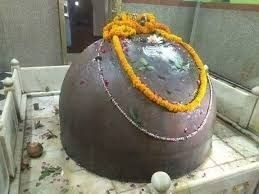
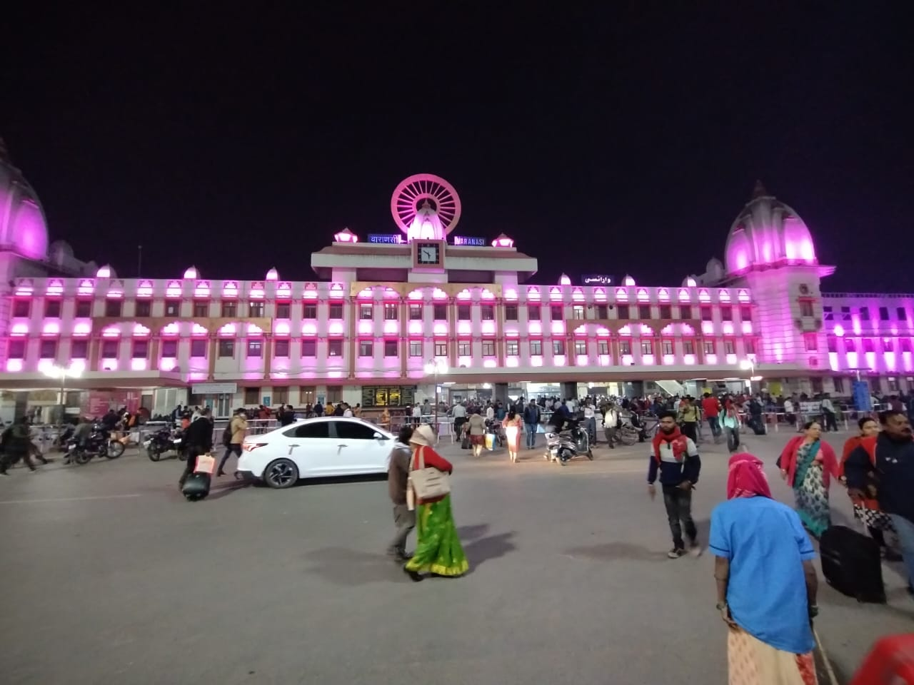
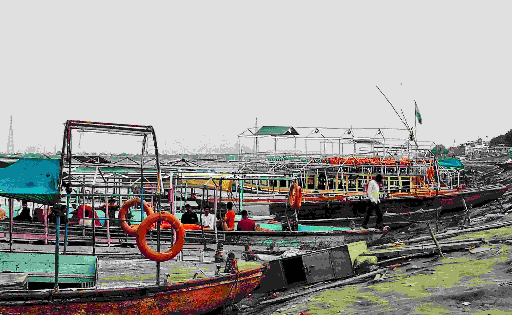
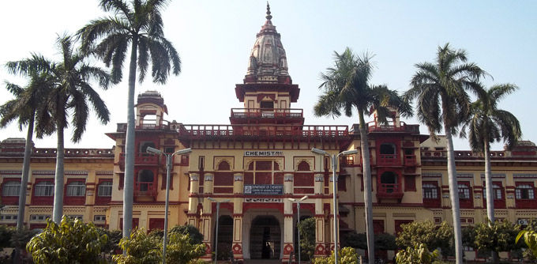

Tilbhandeshwar Mandir- A Temple dedicated to Lord Shiva
About Tilbhandeshwar Mahadev Temple:
The Tilbhandeshwar Mandir is a significant religious site located in Varanasi, India. Varanasi, also known as Kashi or Banares, is one of the world's oldest living cities and a sacred location for Hindus.
There are several Shivalays in Kashi, and the Shiva Puranas and several other Puranas speak highly of them. Today, every pagoda is full of people, and Tilbhandeshwar Mahadev is one such Shiv temple.
He is the Mahadev of Varanasi, as implied by the name, which is tied to sesame and the mole since Baba Bholenath multiplies here every day by a factor of one sesame seed.
Kashi is thought to be divided into two sections: Kashi Khand and Kedar Khand and Baba Tilbhandeshwar Mahadev's temple is situated at Kedarkhand. Baba Vishwanath and Mahamrityunjay own Kashi Khand. Tilbhandeshwar, Kedareshwar, and numerous more significant Shivalay are located in Kedar Khand. On the day of Mahashivratri, the Shivalay is filled with the chants of Har Har Mahadev.
By engaging in Jalabhishek and Rudrabhishek, devotees worship Baba for the fulfillment of their wishes. According to experts, offering sesame seeds to Baba Tilbhandeshwar, who is dedicated to Lakshmi and particularly fond of sesame, brings happiness and prosperity.
History of Tilbhandeshwar Mandir:
The 18th century saw the construction of Tilbhandeshwar Mandir. The Lord Shiva Mandir is located in Pandey Haveli, near Bengali Tola Inter College in Bhelupur, Varanasi. The Shiv Ling in the Mandir is thought to have appeared on its own 2,500 years ago and grows by the size of a "til" (Hindi: i.e. Sesame Seed) every year. The Shiv Ling is currently 3.5 feet tall with a base diameter of about 3 feet. Mata Sharda is also said to have spent time in this temple.
Another popular narrative goes that after being terrified by Baba's ever-increasing form, Lord Bholenath accepted petitions and asked to increase 15 days of the month while decreasing just 15 days. The sages advised rubbing the Shivling with coconut hair to maintain this glorious form of Baba steady, a technique that is still practiced today. The gigantic Shivling is prevented from sprouting by plucking the shape of Baba Bholenath from the hair of the coconut.
It is stated that there is "Kan Kan Mey Hain Bhole Shankar" in Kashi, the city of Bhole Shankar, which means Bhole Shankar is in every detail.
It has also been said in the Shiva Purana, "Kashyam Marnyam Mukti," i.e. salvation is accomplished on death in Kashi, in such a way that it is difficult to convey in words how essential this divine form of Shiva is for believers.
Spiritual Magnificence at Tilbhandeshwar Temple:
The Tilbhandeshwar Mandir is believed to exist since the Satyug period. it is believed that the Shivling used to grow by the size of a sesame seed (til) every day since then till Dwapara yug. During this time, the Shivling had grown significantly already. However, when Kalyug started, people became concerned about the increasing size of the Shivling and prayed to lord shiva. Soon after lord shiva was impressed with their devotion and the devotees expressed their concern. Lord Shiva then blessed the devotees that the Shivling will no longer grow every day, but only on the day of Makarsankranti. Since then, the Shivling has grown only once every year.
The Shivling inTilbhandeshwar Mandir is believed to be one of the few Jagrut and Swayambhu Shivlings. The Tilbhandeshwar Mandir is famous for its strong and divine energies. many people stand as witnesses of the claim that darshan in this temple will free anyone of all their grief, and problems and provide the devotees with a new path for their lives. Belpatri and Til offerings in the Tilbhandeshwar Mandir impress lord shiva very much. 
Location of Tilbhandeshwar Mahadev Mandir:
The Tilbhandeshwar Mandir is located in Kedarkhand, Varanasi (Banaras), Uttar Pradesh, India. Varanasi is also known as Kashi. This city is located on the bank of the Ganga River north side of India.
Tilbhandeshwar Mahadev Mandir is situated in Pandey Haveli, Bhelupur, adjacent to Bengali tola inter college.
- 500 meters East of river Ganga.
- 3.2 kilometers North of Banaras Hindu University.
- 1.5 kilometers South-West of Shri Kashi Vishwanath Mandir.
How to reach Tilbhandeshwar Mandir:
The Tilbhandeshwar Mandir is located in Varanasi (Banaras), Uttar Pradesh, India. It is easily accessible by various modes of transportation such as cars, buses, or trains. You can easily use the city’s public transportation to get to any part of it. Transportation in the area, like cars, taxis, and auto-rickshaws, always keeps going. Around this area, many hotels, tea stalls, fast food stalls, etc are available for tourists.
By Air: If you are interested in traveling by Air, the closest airport is Lal Bahadur Shastri International Airport in Babatpur. This airport is 25.7 km from Tilbhandeshwar Mandir.
From the airport, you can quickly get a taxi or auto rickshaw to reach the Tilbhandeshwar Mandir.
By railway: if you are interested in traveling by railway then the nearest railway stations are Varanasi junction & Banaras railway station.
Distance between railway station to Tilbhandeshwar Mandir.:
- Varanasi junction from 4.8 km
- Banaras railway station from 3.8 km
You can quickly get a taxi or auto & tuk tuk rickshaw from the railway station to reach the Tilbhandeshwar Mandir.
By roadway: Varanasi is well linked to nearby towns and cities by bus. The temple is about 4.2 km from Chaudhary Charan Singh International Bus stop and 4.7 Km from BHU(Banaras Hindu University).
From the bus stop, you can quickly get a taxi or auto & tuk tuk rickshaw to reach theTilbhandeshwar Mandir.
Timing of Tilbhandeshwar Mandir:
The Tilbhandeshwar Mahadev Varanasi is open every day of the week. You can go to the temple any day between 4:30 a.m. and 9:00 p.m.
This temple continues to be attended by thousands of Mahadev devotees who want to read theTilbhandeshwar Mandir.
Aarti timing of Tilbhandeshwar Mandir:
There are 2 aarti timings at the temple.
- Morning aarti - 10:00 am
- Evening aarti - 7:30 pm
Best time to visit Tilbhandeshwar Mahadev Temple:
The best time to visit Tilbhandeshwar Mandir is from July to August during Srawan Mela when the temple receives a makeover. One of Varanasi's most popular tourist destinations is the Tilbhandeshwar Mandir.
Makar Sankranti is a festival of great importance in TilBhandeshwar Mahadev Temple. According to legends, Lord Mahadev was very small when he manifested in the form of Shivalingam. Since that time, it is believed that Bhole Baba has been increasing to the size of a sesame seed on Makar Sankranti every year.
Top Attractions In Tilbhandeshwar Mandir:
Temple Complex of Tilbhandeshwar Mandir:
The temple complex comprises numerous smaller temples to various gods, including Lord Ganesha and Goddess Parvati. Visitors can see the various religious practices connected to Lord Shiva by exploring the complex.
Tilbhandeshwar Mandir:
The primary attraction is the temple itself, which is known for its architectural beauty and spiritual significance. The temple's main sanctum houses the revered Tilbhandeshwar Jyotirlinga, a representation of Lord Shiva.
Aarti Ceremony:
Witnessing the daily aarti ceremony at the Tilbhandeshwar Mandir is a truly mesmerizing experience. The rhythmic chanting, the sound of bells, and the divine atmosphere create a spiritual ambiance that is unforgettable.
Saawan period & Shivratri:
The Tilbhandeshwar Mandir is busiest during the Saawan period because most of the devotees come to witness and attend rituals performed during Saawan for lord Shiva. On the first Somvaar of the month, Jalabhishek is performed for the lord. And in later days Rudraabhishek is performed to worship lord shiva. Another busy time is the festival of Shivratri. The day witnesses an immense crowd on the premises of the Tilbhandeshwar Mandir.
Other famous attractions near Tilbhandeshwar Mandir in Varanasi:
Kashi Vishwanath Temple:
While visiting the Tilbhandeshwar Mandir, you can also explore the nearby Kashi Vishwanath Temple. It is one of the most sacred Hindu temples dedicated to Lord Shiva and is renowned for its historical and religious importance. 
Ganga Aarti at Dashashwamedh Ghat:
Just a short distance from the Tilbhandeshwar Mandir, Dashashwamedh Ghat is one of the main ghats (riverfront steps) along the holy River Ganges in Varanasi. Witnessing the grand Ganga Aarti ceremony here, where priests perform rituals accompanied by chanting and fire offerings, is a must-see spectacle.
Boat Ride on the Ganges:
Take a boat ride along the River Ganges to experience the essence of Varanasi. From the boat, you can witness the ghats, the scenic views, and the spiritual activities taking place on the riverbanks.
Ramnagar Fort:
Located on the opposite bank of the Ganges, Ramnagar Fort is a beautiful and historic fort that offers a glimpse into the grandeur of the past. The fort houses a museum displaying antique artifacts, manuscripts, and a unique collection of vintage cars.
Sarnath:
If you have extra time, you can visit Sarnath, a significant Buddhist pilgrimage site located just a few kilometers from Varanasi. It is the place where Gautama Buddha gave his first sermon after attaining enlightenment.
Assi ghat:
This is of the prominent ghats of Varanasi, Assi ghat is a delight to the eyes. Assi Ghat is also famous for its beautiful sunrise and sunset views. This spot is popular for a holy dip, meditation, yoga, and religious rituals.
It is located 02 km from the Tilbhandeshwar Mandir.
Manikarnika Ghat:
Approximately 5.5 km separate Manikarnika Ghat from the main city of Varanasi. It is one of India's most popular travel destinations. This Ghat is thought to be a lucky location for cremations. This location is regarded as the entrance to the next life.
It is located 2.3 km from theTilbhandeshwar Mandir.
BHU:(Banaras Hindu University)
This university is located just 3.1km away from the Tilbhandeshwar Mandir. This university is famous for education all over the world. Shri Vishwanath Mandir is a well-known Shiva temple on the campus of BHU. This temple is open timing from 5:00 am to 8:00 pm from Monday to Sunday.
These are just a few of the attractions you can explore while visiting the Tilbhandeshwar Mandir in Varanasi. Make sure to check the temple timings and any specific rituals or festivals happening during your visit for an enhanced spiritual experience
Accommodation Near Tilbhandeshwar Mandir Varanasi:
There are different hotels and guesthouses in and around the temple area that cater to different budgets and preferences. Some popular hotels & guesthouses such as:
- Hotel Nandini, Varanasi
- Hotel Dolphin Grand
- Tara Guest House
- Opens in a new window
- Holy Land
- FabExpress Kashi Khand
- Shail Homes
- Relax Paying Guest House
- Ganga Guest House
- Backpackers Park Varanasi
Do's and Don'ts in Tilbhandeshwar Temple Varanasi:
While visiting the Tilbhandeshwar Mandir, there are certain activities that visitors can engage in and certain guidelines to follow.
Do’s in Shri Tilbhandeshwar Mandir:
Dress appropriately: Inappropriate attire Visit the temple with polite and modest attire. As a symbol of respect, it is advised to cover your knees and shoulders.
Remove your footwear: Before entering the temple grounds, it is customary to take your shoes or sandals off. Typically, there is a place set aside for storing shoes.
Maintain silence: Tilbhandeshwar Mandir are places of worship and meditation, so please keep quiet. Keep the temple calm and tranquil, and be considerate of other people.
Offer prayers: If you wish to pray, respectfully approach the primary god or the shrine. Follow the local believers' rites and traditions.
Donate or contribute: Tilbhandeshwar Mandir frequently relies on donations to keep its operations running smoothly. If you want to help the Tilbhandeshwar Mandir, you can donate money or provide food, flowers, or other gifts by the temple's rules.
Ask for advice: If you are unsure of the traditions or ceremonies, ask the temple personnel or nearby followers for clarification. They can offer support and information regarding temple customs.
Dont's in Shri Tilbhandeshwar Mandir:
Do not bring non-vegetarian food or alcohol: Consumption of non-vegetarian food or alcohol is generally not allowed inside the temple premises. Respect the sanctity of the place and adhere to the rules.
Do not take photos or videos without permission: Tilbhandeshwar Mandir may have rules against it. Before taking any pictures, abide by the rules and get consent.
Do not litter: Keep theTilbhandeshwar Mandir grounds neat by placing trash in the appropriate bins. Avoid leaving trash behind or damaging the environment in any way.
Avoid contacting the deity or holy items: In Tilbhandeshwar Mandir, it is forbidden to touch the deity or holy items. Respect the traditions and adhere to the rules when it comes to making physical contact with idols or artifacts.
Tilbhandeshwar Mandir is the sanctuary of devotion and reverence: Avoid making public shows of affection there. Keep your composure and avoid showing your affection in front of others.
Keep others undisturbed: Keep an eye out for additional devotees or guests. Stay away from loud conversations, unwanted noise, and actions that might disturb the tranquil environment.
Please be aware that exact guidelines and traditions may vary amongst temples. It's always a good idea to ask the temple's administrators or local devotees before your visit whether there are any particular rules or regulations.
Get in Touch
Have An Enquiry? Write To Us…
Popular Pilgrimage Packages
Information Links and Downloads
Talk to Kailash Yatra Expert
Submit your contact number.
Kailash Yatra Expert will call You within 1 minute.
(24X7 Free Service, India Number only)
Get All Details on Mobile


Frequently Asked Questions
Related Blogs


We Got Featured in the Media


 Call
Call  WhatsApp
WhatsApp  Enquiry
Enquiry Connect with us :
Office Address :
Trip To Temples, 201, JOP Plaza
Sector 18, Noida, 201301
Uttar Pradesh, India
Call : +91-8510007751
E-mail : info@triptotemples.com